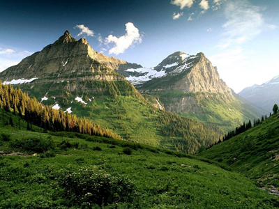

Ir a la web de adidas
Una imagen digital es la representación de una imagen para que pueda ser tratada por un ordenador. Las imágenes digitales se pueden obtener de varias formas:
✓ Por medio de dispositivos de conversión analógica-digital como los escáneres y las cámaras digitales.
✓ Mediante programas informáticos, como por ejemplo realizando dibujos con el ratón o mediante un programa de renderización 2D.
✓ Dibujando con una tableta digitalizadora o gráfica, que es un periférico que permite al usuario introducir gráficos o dibujos a mano, tal como lo haría con lápiz y papel. Existen dos tipos de imágenes digitales los mapas de bits y los gráficos vectoriales.
Gráficos vectoriales
Estructura HTML
Las imágenes vectoriales están compuestas por entidades geométricas simples:
segmentos y polígonos básicamente (de hecho, una curva se reduce a una sucesión de
segmentos). Cada una de estas entidades está definida matemáticamente por un grupo de
parámetros (coordenadas inicial y final, grosor y color del contorno, color del relleno, etc.) Por
compleja que pueda parecer una imagen, puede reducirse a una colección de entidades
geométricas simples.
Último boletín del BOJA
Al estar compuestas por entidades geométricas simples, las imágenes vectoriales se
pueden cambiar de escala, para ampliarlas o reducirlas, sin que la imagen pierda calidad.
Esta es su gran ventaja, porque proporcionan siempre imágenes de colores planos con
contornos limpios, sin importar el tamaño al que se muestran.
Mapas de bits
Las imágenes de mapa de bits consiste en una representación matricial de la imagen.
Esta es dividida en un arreglo bidimensional o matriz de filas por columnas. La intersección
de una fila con una columna es un elemento de imagen o píxel. Cada uno de los píxeles de
la imagen tiene asignado un número que representa el color de ese punto en la imagen. La
sensación obtenida al ver la imagen formado por todos los píxeles juntos, cada uno con su
color es el resultado de integrar visualmente, en la retina, las variaciones de color y
luminosidad entre píxeles vecinos.
Las imágenes de mapa de bits, también llamadas bitmap, son la alternativa ideal para
reproducir objetos sutilmente iluminados y escenas con gran variación tonal. De hecho, es el
tipo de imagen utilizado para la fotografía y el cine. Obviamente, la calidad de la imagen
dependerá de la cantidad de píxeles utilizados para representarla.
Las imágenes bitmap no permiten el cambio de escala. Si aumentamos una imagen
bitmap se perderá definición en la imagen ya que los píxeles aumentan de tamaño y los
cuadraditos se aprecian más. Este efecto, que se conoce con el nombre de pixelado se hace
más evidente en las líneas curvas y en las zonas en las que hay cambios bruscos de
luminosidad.
Existen tres factores que influyen a la hora de representar una imagen bitmap:
resolución, profundidad de color y dimensiones de la imagen.
La resolución de una imagen es la cantidad de píxeles que la componen. Suele
medirse en píxeles por pulgada (ppi) o píxeles por centímetro (pcm). Cuanto mayor es la
resolución de una imagen más calidad tendrá su presentación pero, desgraciadamente, más
espacio ocupará en el disco el archivo gráfico que la contiene.
Por ejemplo, una imagen con una resolución de 72 ppi, que es muy común en las
páginas web, necesitará 5184 píxeles en cada pulgada cuadrada, que es un cuadrado de
2,54 centímetros de lado. Una resolución de 72 ppi es adecuada para imágenes que se
muestran en el monitor de un ordenador. La nitidez de los detalles es suficiente y la
reproducción de las distintas tonalidades es correcta. Sin embargo, podría ser insuficiente
para una impresión en papel.
Profundidad de color
Cada uno de los píxeles de una imagen bitmap está coloreado con un color
homogéneo. Así pues, el archivo que contiene los datos de la imagen debe contener la
información del color de cada uno de los píxeles. ¿Cuántos bit se emplean para albergar esta
información? Eso es lo que se conoce con el término profundidad de color de una imagen.
Profundidad de color es el número de bits utilizados para describir el color de cada
pixel de la imagen. Es obvio que, cuanto mayor sea la profundidad de color de una imagen,
más colores tendrá la paleta disponible y, por tanto, la representación de la realidad podrá
hacerse con más matices, con colores más sutiles.
Por ejemplo, si sólo disponemos de 1 bit para describir el color de cada pixel, tan sólo
podremos elegir entre dos colores: un color si el bit tiene el valor 0 (habitualmente negro) y
otro color si el bit vale 1 (habitualmente blanco).
Si disponemos de 8 bit para describir el color de cada pixel, podremos elegir entre 256
colores, porque 2 8 =256. Esta es una profundidad de color suficiente para las imágenes
construidas en el modo denominado escala de grises, porque con 8 bits cada pixel puede
adoptar un tono entre 256 valores posibles de gris, entre el negro absoluto (00000000) y el
blanco absoluto (11111111).
Si los 8 bit disponibles para la profundidad deben designar colores, entonces se utiliza
una tabla con los 256 colores más frecuentes, que incluyen obviamente el negro, el blanco y
varios tonos de gris, para componer la imagen. Cada una de las 256 combinaciones posibles
de unos y ceros de los 8 bits es un índice que permite acceder a la tabla. Por eso, a este tipo
de imágenes se les conoce como de color indexado., que es el más frecuente en la web.
Una imagen bitmap de calidad está compuesta por varias capas: una para cada color
básico (rojo, verde y azul, por ejemplo) y una para la luminosidad (de oscuro absoluto a luz
absoluta). Por encima de 16 bits de profundidad, la descripción del color se divide por capas.
Si la profundidad de color es de 16 bits, por ejemplo, se dedican 4 bits (128 niveles) a cada
capa. Y si la profundidad es de 32 bits, cada capa utiliza 8 bits (256 niveles) para ajustar el
color.
Dimensión de la imagen
Las dimensiones de una imagen se expresan, como es habitual, en cm o mm. Por
ejemplo, una imagen de 10 x 15 cm medirá 10 cm de ancho y 15 cm de alto. A veces, sin
embargo, los programas expresan el tamaño de una imagen en píxeles. Para calcular el
tamaño de una imagen en píxeles basta con multiplicar las dimensiones lineales, en
centímetros por ejemplo, por la resolución en píxeles por centímetro. Hay que poner
atención para utilizar las mismas unidades de longitud.
El tamaño del archivo de imagen
El tamaño del archivo es una cifra, en bits o en bytes, que describe la cantidad de
memoria necesaria para almacenar la información de la imagen en un soporte (disco duro,
CD, tarjeta de memoria, etc). Y, como ya te imaginas, el tamaño del archivo dependerá de
varios factores y, especialmente, de la resolución (R), las dimensiones de la imagen (Largo x
Ancho) y la profundidad de color (P). Puedes calcular el tamaño de un archivo con la
siguiente fórmula:
Tamaño = R2*L*A*P
Por ejemplo, una imagen de 10 x 15 cm (3,94 x 5,91 pulgadas), con una resolución de 96
ppi (38 pcm) y una profundidad de color de 32 bits, tendrá un tamaño bruto de:
9216 x 3,94 x 5,91 x 32 = 6.857.144 bits = 858.393 Bytes = 838 KBytes
Recuerda que 1 byte son 8 bits y que 1 Kilobyte equivale a 1024 bytes.
Formato archivo de imagen
Una vez creada nuestra imagen, ya sea capturada con la cámara o creada a mano, la
guardamos en un archivo. El archivo, con un nombre y una extensión, no sólo contiene la
información de cada pixel. Tiene también una cabecera en la que se guarda información
destinada al programa encargado de abrir la imagen y mostrarla en el monitor.
Aunque, por regla general, los archivos vectoriales tienen tamaños mucho menores
que los archivos bitmap, todos los archivos gráficos suelen tener tamaños muy grandes. Este
gran consumo de espacio en disco hizo necesario el desarrollo de tecnologías capaces de
comprimir archivos gráficos.
Cada sistema de compresión utiliza un algoritmo matemático propio para reducir la
cantidad de bits necesarios para describir la imagen, y marca el archivo resultante con una
extensión característica: bmp, wmf, jpg, gif, png, etcétera.
Algunos de estos algoritmos están patentados, son propiedad de una empresa, y hay
que pagar por utilizarlos. Otros algoritmos, en cambio, son de dominio público y pueden
utilizarse libremente. También se distinguen entre si por las pérdidas producidas en la
información de la imagen durante el proceso de compresión. Así pues hay algoritmos con
pérdidas y sin pérdidas. Veamos algunos de los formatos de compresión más utilizados:
✓ JPG.- Es un formato de compresión con pérdidas, pero que desecha en primer lugar
la información no visible, por lo que las pérdidas apenas se notan. El algoritmo jpg
está basado en el hecho de que el ojo humano percibe peor los cambios de color
que las variaciones de luminosidad. jpg divide la información de la imagen en dos
partes: color y luminosidad y las comprime por separado. Admite modos en escala de
grises con una profundidad de 8 bits y en color hasta 24 bits. Permite la carga
progresiva en un navegador, lo que lo ha convertido en el formato estándar en la
web. No es un formato adecuado para imágenes con alto contraste de color. Además,
hay que tener en cuenta que la compresión se produce automáticamente cada vez
que se guarda el archivo, por lo que es aconsejable guardar en este formato una
única vez, cuando la imagen esté ya terminada.
✓GIF.- Es un formato que devuelve imágenes de tamaño muy reducido. Esa reducción
se consigue indexando los colores, es decir, asimilándolos a uno de los 256 colores
de su tabla. Su profundidad de color máxima, por tanto, es de 8 bits. El formato gif
permite hacer algunas cosas curiosas: puede hacerse transparente uno de los
colores indexados en la tabla, lo que permite suprimir fondos. También permite
enlazar varias imágenes gif en una secuencia, lo que se conoce con el nombre gif
animado. El pequeño tamaño de los archivos gif hizo que fuera el formato más
extendido en los primeros tiempos de Internet. Pero su principal defecto consiste en
que es un formato propietario (CompuServe Inc.), lo que ha provocado la aparición
del formato libre png que, además, comprime mejor que gif.
✓PNG.- Es el formato de más rápido crecimiento en la web, porque reúne lo mejor de
jpg y gif. Se trata de un formato de compresión sin pérdidas, con una profundidad de
color de 24 bits. Soporta hasta 256 niveles de transparencia, lo que permite fundir la
imagen perfectamente con el fondo. Entre sus inconvenientes hay que citar que no
soporta animaciones y que el tamaño de los archivos png, debido a la capa de
transparencia, siempre es mayor que el de los archivos jpg.
✓BMP.- Es un formato de compresión sin pérdidas. Admite cualquier tipo de resolución
y una profundidad de color máxima de 24 bits. Es el formato nativo de Microsoft y se
usa en todas sus aplicaciones (Windows, Office, etc.). Por esta razón es muy frecuente
encontrar archivos bmp, pero su tasa de compresión es ridículamente baja. Entre los
navegadores, sólo es soportado por Internet Explorer.

 Esta es dividida en un arreglo bidimensional o matriz de filas por columnas. La intersección
de una fila con una columna es un elemento de imagen o píxel. Cada uno de los píxeles de
la imagen tiene asignado un número que representa el color de ese punto en la imagen. La
sensación obtenida al ver la imagen formado por todos los píxeles juntos, cada uno con su
color es el resultado de integrar visualmente, en la retina, las variaciones de color y
luminosidad entre píxeles vecinos.
Esta es dividida en un arreglo bidimensional o matriz de filas por columnas. La intersección
de una fila con una columna es un elemento de imagen o píxel. Cada uno de los píxeles de
la imagen tiene asignado un número que representa el color de ese punto en la imagen. La
sensación obtenida al ver la imagen formado por todos los píxeles juntos, cada uno con su
color es el resultado de integrar visualmente, en la retina, las variaciones de color y
luminosidad entre píxeles vecinos.